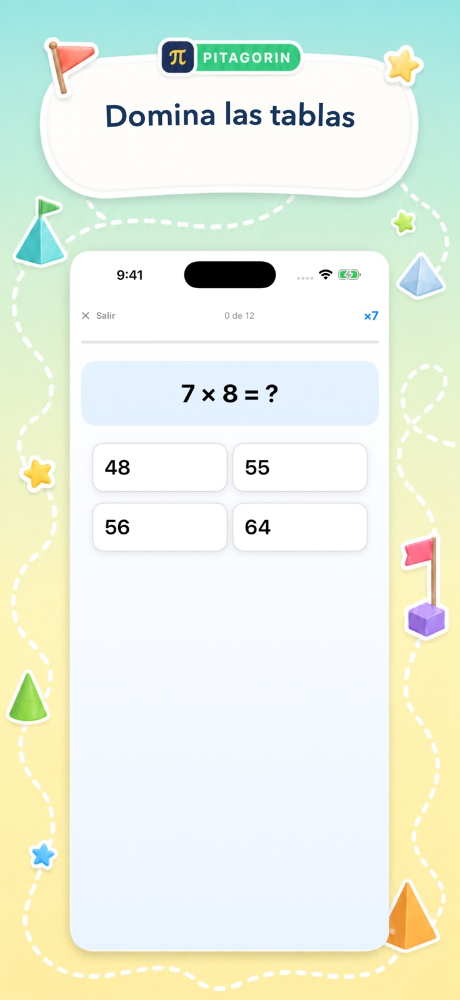

Juega para ganar fluidez
Desafío de Velocidad, Modo Supervivencia, Desafío de velocidad por parejas y los retos convierten la repetición en una experiencia dinámica.
Práctica matemática que apetece empezar
Pitagorin convierte la aritmética, las tablas y el álgebra inicial en sesiones breves con explicaciones claras. Está pensado para niños de 5 a 13 años y también para adultos que quieren refrescar las matemáticas cotidianas.
Disponible para iPhone y iPad


Una forma mejor de aprender
Cada modo tiene un objetivo claro: ganar fluidez, entender un método o desarrollar el razonamiento.
Desafío de Velocidad, Modo Supervivencia, Desafío de velocidad por parejas y los retos convierten la repetición en una experiencia dinámica.
Las pistas visuales y los tutoriales muestran los pasos de la aritmética y el álgebra, no solo la respuesta.
Marcas personales, dominio de tablas e historial de La Academia muestran dónde seguir practicando.
Mira la app real
Desde un minuto de cálculo mental hasta una ecuación guiada, siempre hay un punto de partida claro y respuesta inmediata.


Una app, distintos objetivos
El modo de aprendizaje tranquilo y los retos dinámicos sirven para descubrir un concepto, reforzar la confianza escolar o ejercitar la mente cada día.
Elige operaciones y dificultad adaptadas a la edad y abre una explicación visual cuando la necesites.
Repasa aritmética, porcentajes, fracciones, raíces, tablas o álgebra en sesiones breves.
Cuando quieras
Descarga Pitagorin gratis para iPhone y iPad. Las funciones Pro opcionales están disponibles mediante compras dentro de la app.